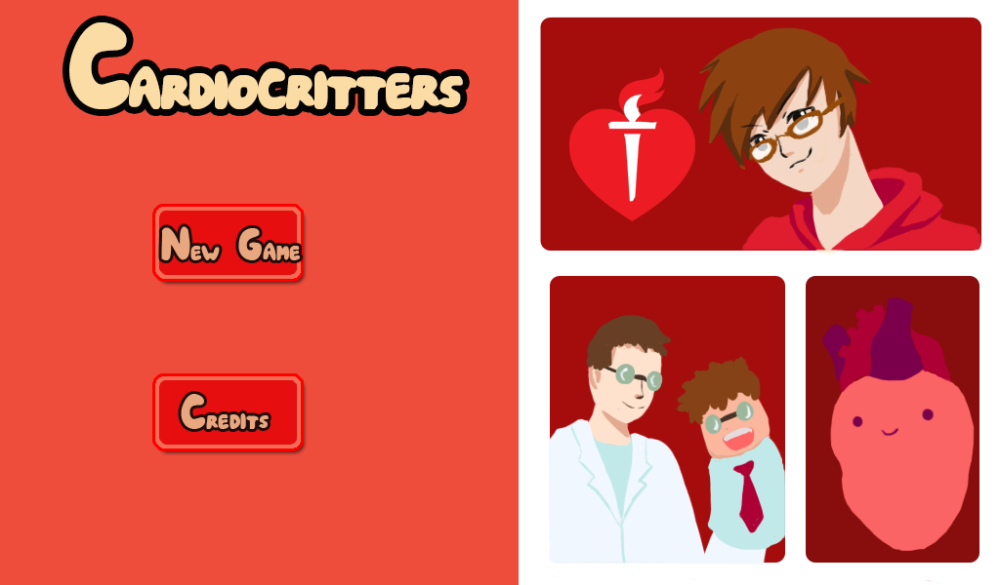

Bad Nate: The Jammer of Joseph

2-D Fighter. Players each choose a character and battle other players using acquired weapons and/or the characters’ unique abilities. The last man standing is victorious.
More information on Bad Nate: The Jammer of Joseph
CardioCritters
The game was developed for the American Heart Association to promote a healthy lifestyle and raise heart disease awareness. CardioCritters is a pet simulation game with RPG elements. Players play various mini-games to keep their pet heart in good health. Playing enough mini-games makes the heart level-up which, in turn, unlocks new features in the game. The pet heart can be customized with accessories.
More information on CardioCritters.
Chibi Fighters
2-D Fighter. Bad Nate was inspired by Chibi Fighters. Players fight using weapons that spawn on the field at random. The last man standing is victorious.
More information on Chibi Fighters.
CourseWork
All my past coursework; ranging from simple memory allocation implementations to a search engine using Project Gutenberg's ebooks.
GitHub Coursework Repo